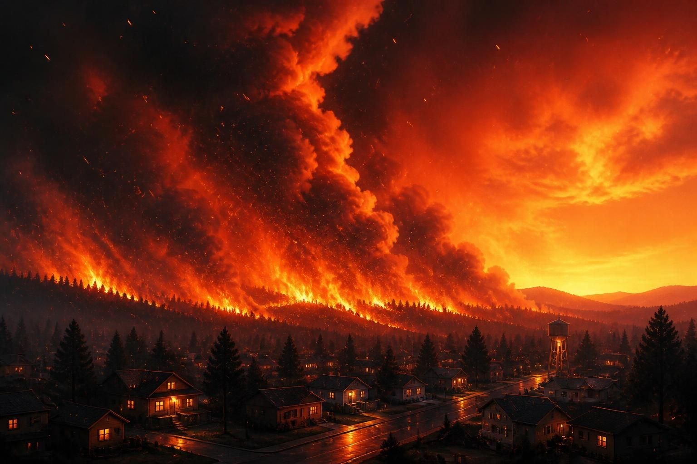
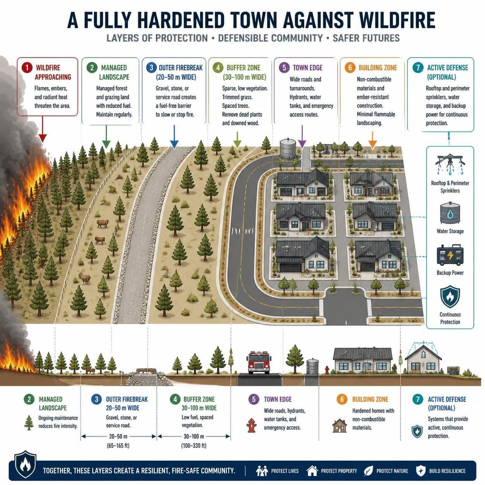

A layered approach to wildfire resilience for towns: a 200 m non-combustible buffer, drainage to underground holding tanks, pump-fed hydrants, sprinkler-ready homes, and non-combustible buildings.

Preparing towns before wildfire arrives can reduce ignition risk, protect homes, and improve emergency response.
Wildfires are becoming more destructive as climate change, hotter temperatures, prolonged drought, and longer fire seasons increase wildfire risk across North America and Europe. Canada has seen major wildfire seasons with hundreds of active fires across multiple provinces and territories, while British Columbia and other regions have faced extreme fire conditions and emergency preparedness measures. France, Spain, and other European countries are also experiencing repeated heatwaves and wildfire outbreaks. Demand for specialized firefighting aircraft such as waterbombers remains high worldwide, making it harder for communities to rely on rapid suppression alone. That is why wildfire protection, community firebreaks, ember-resistant buildings, and town wildfire planning are becoming essential parts of modern wildfire resilience.
This concept shows the fire front, the 200 m non-combustible buffer, drainage channels feeding underground tanks, a pump house, and the defended town beyond.

No burnable material, with gravel, stone, drainage channels, and service access.
Runoff flows into underground holding tanks or cisterns, ready to support firefighting systems.
Non-combustible buildings, hydrants, and sprinkler-ready homes with targeted sprinkler coverage where needed.
Wildfires often destroy towns through embers and rapid fire spread. Layered protection can reduce ignition risk and improve emergency access.
If you’re a town planner, architect, fire professional, university researcher, part of a community group, a member of government, or a member of the public interested in practical wildfire protection, please get in touch.
Media inquiries are welcome, and sharing this project on social media helps spread the word.
Email: admin@stopwildfires.org
Text, diagrams, and other materials on this site are copyrighted. Permission is required for reproduction, adaptation, translation, redistribution, or commercial use.
© 2026 Les Mx. All rights reserved.
If you’d like to help support this website and project, donations are welcome.